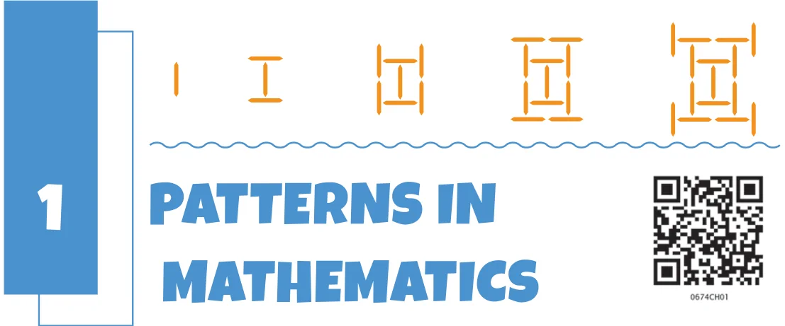

Mathematics is, in large part, the search for patterns, and for the explanations as to why those patterns exist. Such patterns indeed exist all around us - in nature, in our homes and schools, and in the motion of the sun, moon, and stars. They occur in everything that we do and see, from shopping and cooking, to throwing a ball and playing games, to understanding weather patterns and using technology. The search for patterns and their explanations can be a fun and creative endeavour. It is for this reason that mathematicians think of mathematics both as an art and as a science. This year, we hope that you will get a chance to see the creativity and artistry involved in discovering and understanding mathematical patterns. It is important to keep in mind that mathematics aims to not just find out what patterns exist, but also the explanations for why they exist. Such explanations can often then be used in applications well beyond the context in which they were discovered, which can then help to propel humanity forward.
For example, the understanding of patterns in the motion of stars, planets, and their satellites led humankind to develop the theory of gravitation, allowing us to launch our own satellites and send rockets to the Moon and to Mars; similarly, understanding patterns in genomes has helped in diagnosing and curing diseases - among thousands of other such examples.